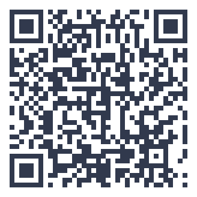

thuisitaliaans.com/esercizi/parla-dei-tuoi-studi-o-del-tuo-lavoro.html
Parla dei tuoi studi o del tuo lavoro
Gira la ruota e rispondi a una domanda sui tuoi studi o il tuo lavoro, a sorpresa.
Cosa contiene questo esercizio
«Parla dei tuoi studi o del tuo lavoro» è un esercizio di italiano di livello A2 con 4 frasi. Qui sotto trovi tutto il contenuto in chiaro.
Frasi di questo esercizio, in ordine (4)
- Cosa studi o che lavoro fai attualmente?
- Ti piace il tuo lavoro o i tuoi studi? Perché?
- Qual è stata la scelta professionale più importante della tua vita?
- Cosa vorresti fare tra dieci anni?
Parlare di studio e lavoro
Descrivere il proprio percorso di studi o lavoro è un tema pratico e ricorrente.
Padroneggiare questo argomento ti aiuta a esprimerti con più autonomia in conversazioni di tutti i giorni. Questo esercizio allena il lessico dello studio e del lavoro, utile per contesti sia scolastici che professionali.
Questo argomento fa parte del livello elementare del QCER, un gradino importante verso una vera autonomia linguistica in italiano.
Non preoccuparti di essere perfetto quando rispondi: l'obiettivo di questo esercizio è esprimerti con naturalezza e fluidità, anche accettando qualche imperfezione grammaticale.
Parlare di studio e lavoro è un tema sempre utile
Descriviamo insieme il tuo percorso, presente e futuro.
Prenota la prova gratuita →Venti minuti al giorno, sul telefono
Con l'app Ti: percorso A1–C2, 25 romanzi graduati, edicola tematica e dizionario in 14 lingue.
Scopri l'app Ti →Approfondisci con il blog: il mondo delle lezioni

{kind=link}